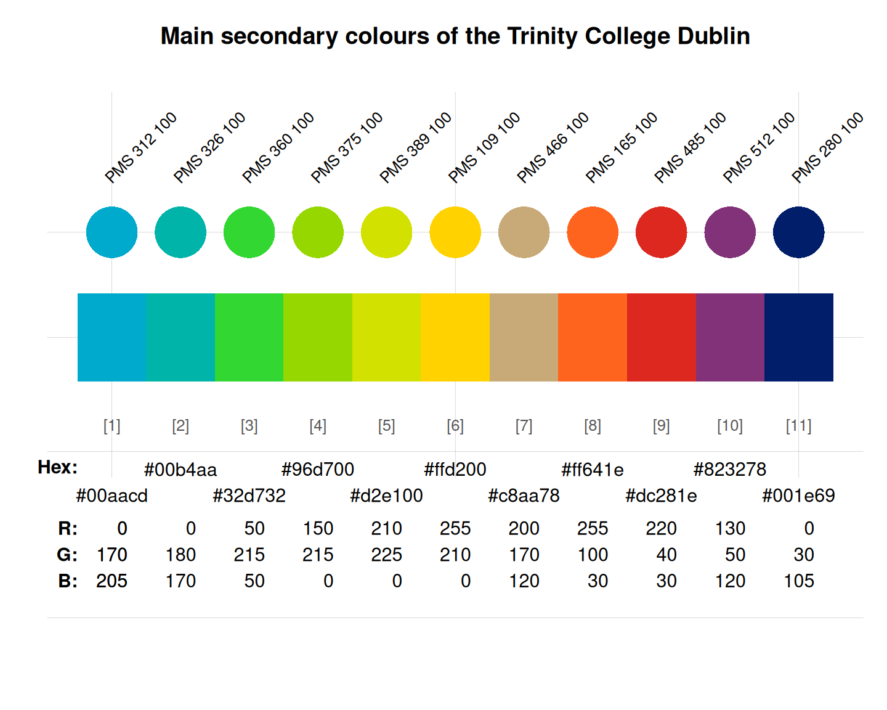

Secondary colours of Trinity College Dublin, Ireland
Source:R/Trinity_College_Dublin.R
trinity_2.Rdtrinity_2 provides the secondary colour palette
of Trinity College Dublin, Ireland.
Source
Color definitions are based on TCD's visual identity guidelines.
Details
trinity_2 uses the HEX color definitions.
The secondary colour palette supports the primary colours of trinity_1.
It is used for graphic elements within communications (e.g., in illustrations, charts, diagrams and iconography). It can also be used to add colour to items where a photographic image is unsuitable or unavailable (e.g., posters, slides or backdrops).
It is important to remember that these are supporting colours only;
they should not predominate or overwhelm the
primary blue, grey, and white colours (of trinity_1).
See also
trinity_1 for primary colors of Trinity College Dublin;
seecol for viewing and comparing color palettes;
usecol for using color palettes;
simcol for finding similar colors;
newpal for defining new color palettes;
grepal for finding named colors.
Other Irish university color palettes:
galway_1,
galway_2,
limerick_1,
limerick_2,
maynooth,
trinity_1,
ucc_1,
ucc_2,
ucd
Examples
trinity_2
#> PMS 312 100 PMS 312 75 PMS 312 50 PMS 312 25 PMS 312 10 PMS 326 100
#> "#00aacd" "#40bfda" "#80d4e6" "#bfeaf3" "#e6f7fa" "#00b4aa"
#> PMS 326 75 PMS 326 50 PMS 326 25 PMS 326 10 PMS 360 100 PMS 360 75
#> "#40c7bf" "#80dad4" "#bfecea" "#e6f8f7" "#32d732" "#65e165"
#> PMS 360 50 PMS 360 25 PMS 360 10 PMS 375 100 PMS 375 75 PMS 375 50
#> "#99eb99" "#ccf5cc" "#ebfbeb" "#96d700" "#b0e140" "#cbeb80"
#> PMS 375 25 PMS 375 10 PMS 389 100 PMS 389 75 PMS 389 50 PMS 389 25
#> "#e5f5bf" "#f5fbe6" "#d2e100" "#dde940" "#e9f080" "#f4f8bf"
#> PMS 389 10 PMS 109 100 PMS 109 75 PMS 109 50 PMS 109 25 PMS 109 10
#> "#fbfce6" "#ffd200" "#ffdd40" "#ffe980" "#fff4bf" "#fffbe6"
#> PMS 466 100 PMS 466 75 PMS 466 50 PMS 466 25 PMS 466 10 PMS 165 100
#> "#c8aa78" "#d6bf9a" "#e3d4bc" "#f1eadd" "#faf7f2" "#ff641e"
#> PMS 165 75 PMS 165 50 PMS 165 25 PMS 165 10 PMS 485 100 PMS 485 75
#> "#ff8b56" "#ffb28f" "#ffd8c7" "#fff0e9" "#dc281e" "#e55e56"
#> PMS 485 50 PMS 485 25 PMS 485 10 PMS 512 100 PMS 512 75 PMS 512 50
#> "#ee938f" "#f6c9c7" "#fceae9" "#823278" "#a1659a" "#c199bc"
#> PMS 512 25 PMS 512 10 PMS 280 100 PMS 280 75 PMS 280 50 PMS 280 25
#> "#e0cedd" "#f3ebf2" "#001e69" "#40568f" "#808fb4" "#bfc7da"
#> PMS 280 10
#> "#e6e9f0"
main_cols <- seq(1, 51, by = 5)
unikn::seecol(trinity_2[main_cols],
main = "Main secondary colours of the Trinity College Dublin") # view palette
